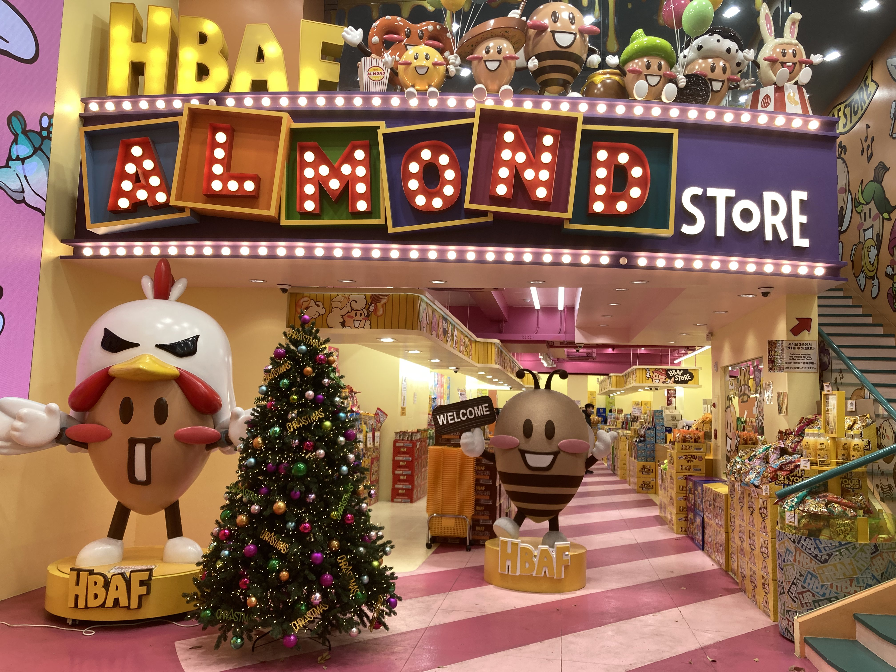

| 名前 | 写真 | 説明 |
| GotoMall 고투몰 | ・大型地下ショッピングモール ・交通アクセスが良い ・天気関係なく買い物ができる ・最寄り駅 - 高速ターミナル駅 |
|
| 昌徳宮 (チャンドックン) 창덕궁 |
・王宮の一つ ・15世紀に建てられた ・最寄り駅 - 安国(アンゴク)駅 |
|
| 景福宮 (キョンボックン) 경복궁 |
・主要な王宮 ・1395年に建設された ・伝統衣装を着て、撮影体験できる ・最寄り駅 - 景福宮(キョンボックン)駅 |
|
| 世宗大王像 セジョンデワン像 세종대왕 동상 |
・光化門広場にある ・ハングルを創製したことで有名 ・韓国の歴史を象徴するランドマーク ・最寄り駅 - 光化門(コウカモン)駅 |
|
| HBAF ハニーバターアーモンドフレンズ |
 | ・韓国の人気なお菓子 ・様々なフレーバーのアーモンド ・人気なお土産 最寄り駅 - 明洞(ミョンドン)駅 |